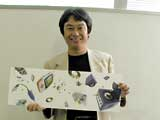
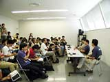
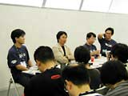
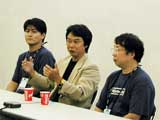
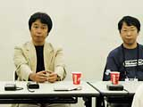

| #7 ゲームクリエイター、宮本茂氏インタビュー |
|
任天堂にこの人あり！と言われるゲームクリエイター、宮本茂氏に、いろいろ興味深いお話を聞いてしまいました！ 宮本氏の考える、任天堂の今後の展開とは？ Ｑ ニンテンドー ゲームキューブについて Ａ デザインは、総合開発本部の芦田が担当しました。開発のほうにもコアな人間がいますので、そっちの意見を無視したわけではないですが。見た目は複雑な形をしてますけれど、単純に扱えることをめざしてます。家族に支持されるというか、大人が見ても安心なデザインを考えました。 NINTENDO64はよくできたハードではあったんですが、やはり今の時代になると、パワーに少し限界を感じていたことも事実です。ニンテンドー ゲームキューブは、あとはソフト屋がどれだけがんばれるか、といっていいくらい色んなことができる優れたハードです。スーパーファミコンのとき以上に盛り上がれるハードになることと思います。ソフトの値段はまだ未定ですが、もちろんロムカートリッジよりは安く考えてます。でも、本当はソフトの価値に応じた値段をつけたいんですけどね(笑)。逆に、値段が跳ね上がるくらいのソフトを作りたい(笑)。ま、これはクリエイターとしての意見ですけどね(笑)。会社としての意見ではないです。今後のソフトのラインナップは、来年の５月までに、任天堂だけで５タイトルを考えています。 Ｑ ゲームボーイ アドバンスについて Ａ 大人をねらったハードってことはないです。旧ゲームボーイのときも、ボーイだからといって、少年だけをねらったというわけではありませんし。一度ゲームボーイ アドバンスにいくと、もう以前のゲームボーイには戻れないというくらい魅力的なハードだと思います。NINTENDO64を出したときにもゲームボーイというハードはあったわけで、今後も、任天堂のものを色々つなげて遊べないかとか、そういう展開を考えていきたいですね。家族、友人間などでそれぞれが任天堂のハードを持っていると、いろんな出会いがある、というような(笑)。 Ｑ キャラクタービジネスについて Ａ 『ポケモン』の快進撃で、メディアミックスのおもしろさを見てきたわけですが、だからといって、今後も安易にそういう流れに乗る、というような考え方はしたくありません。マリオやポケモンなど、魅力的なキャラクターは多いですが、キャラクタービジネスを考えた上でのキャラ作りというのは考えてないですね。 |
|
Ｑ NINTENDO64について Ａ ニンテンドー ゲームキューブが出たからNINTENDO64をやめようとか、そういうことはしません。ロクヨンの魅力的なタイトルはこれからも出てきます。新ハードが出たからといって、ユーザーさんも一斉にそちらに移れるわけないし、すみ分けできると思うんですけどね。いまだにスーパーファミコンで遊んでくれてるユーザーも多いという事実もあるし、実はあんまり気にしてないところでもあります。 |
|
|